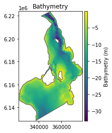
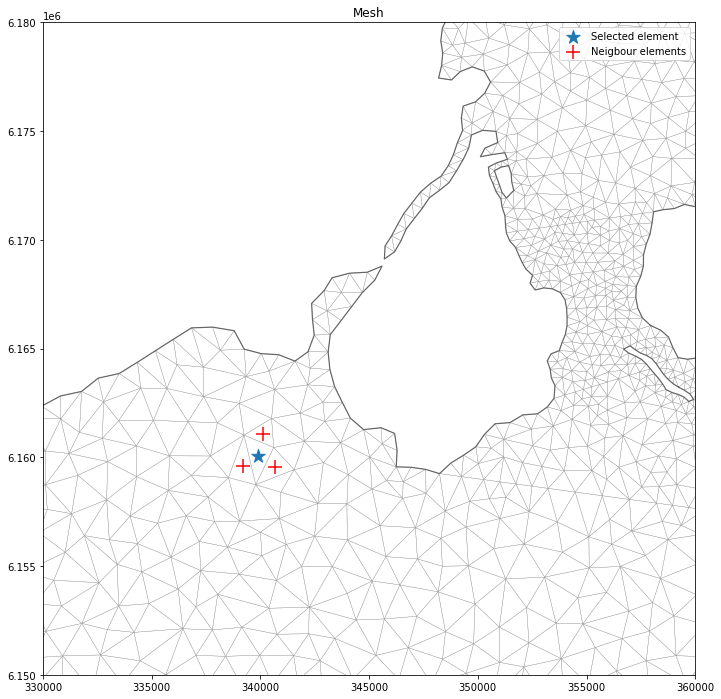
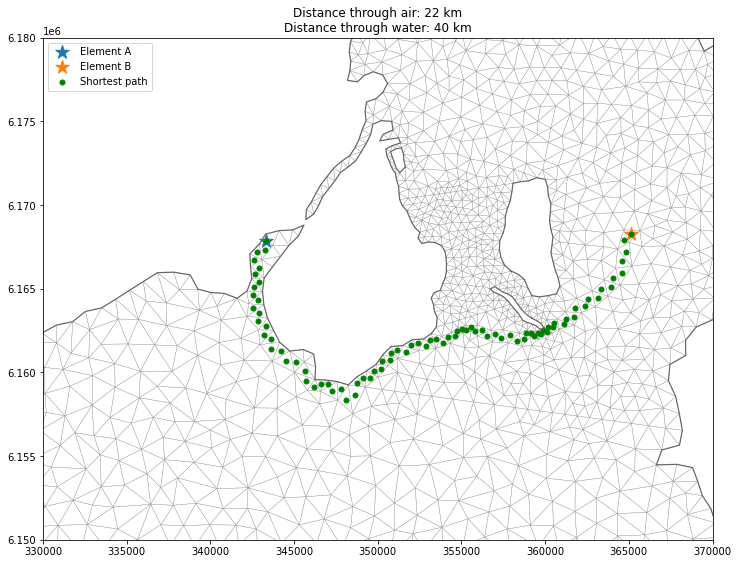
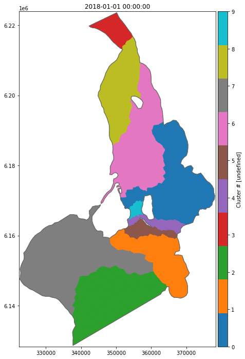

import numpy as np
import matplotlib.pyplot as plt
import mikeioDfsu - Connectivity
ds = mikeio.read("../tests/testdata/oresundHD_run1.dfsu")
ds.geometry.plot();
The info on the connectivity between nodes and elements can be found in the element table
et = ds.geometry.element_table
len(et)3612et[0]array([718, 229, 143])Let’s find out if any of these nodes are also found in another element, this would imply that these elements are neigbours (adjacent).
for i, e in enumerate(et):
for n in et[0]:
if n in e:
print(f"Node: {n} found in element {i}")Node: 718 found in element 0
Node: 229 found in element 0
Node: 143 found in element 0
Node: 229 found in element 701
Node: 718 found in element 743
Node: 143 found in element 765
Node: 143 found in element 973
Node: 718 found in element 974
Node: 718 found in element 2000
Node: 229 found in element 2000
Node: 229 found in element 2080
Node: 718 found in element 2081
Node: 718 found in element 2982
Node: 143 found in element 2982ne = ds.geometry.n_elementsnodetable = {}
for el in range(ds.geometry.n_elements):
nodes = et[el]
for node in nodes:
if node in nodetable:
nodetable[node].append(el)
else:
nodetable[node] = [el]def is_neighbour(a, b) -> bool:
return len(set(a).intersection(set(b))) == 2# create table with neighbours
ec = {}
for el in range(ne):
nodes = et[el] # nodes in this element
for n in nodes:
elements = nodetable[n] # elements that has this node
for e in elements:
if is_neighbour(et[el], et[e]):
if el in ec:
if e not in ec[el]:
ec[el].append(e)
else:
ec[el] = [e]ec[1772][1053, 1769, 1773]Neighbours
coords = ds.geometry.element_coordinates
e1 = ds.geometry.find_nearest_elements(x=340000,y=6.16e6)
e11722e1_n = ec[e1]
e1_n[1720, 3125, 1717]ax = ds.geometry.plot.mesh(figsize=(12,12))
plt.xlim(330000,360000)
plt.ylim(6.15e6,6.18e6)
plt.scatter(coords[e1,0], coords[e1,1], marker='*', s=200, label="Selected element")
plt.scatter(coords[e1_n,0], coords[e1_n,1], marker='+',c='red', s=200, label="Neigbour elements")
plt.legend()<matplotlib.legend.Legend at 0x26a88790520>
Shortest path
ea = ds.geometry.find_nearest_elements(x=343000,y=6168000)
eb = ds.geometry.find_nearest_elements(x=365000,y=6168000)from scipy.sparse import lil_matrix, csr_matrix
from scipy.sparse.csgraph import shortest_path
D = lil_matrix((ne, ne))
for i in range(ne):
row = ec[i]
for j in row:
d = np.sqrt(
(coords[i,0] - coords[j,0]) ** 2 + (coords[i,1] - coords[j,1]) ** 2
)
D[i, j] = d
D = csr_matrix(D)
dist, pred = shortest_path(D, return_predecessors=True)dist[ea,eb]39874.190780865974The predessors matrix pred encodes the previous step in the shortest path between any node (in this respect a node in the graph is an element) in the graph. In order to get all steps in the path between two elements we can loop through the steps.
path = [eb] # the destination
n = eb
while n != ea: # when we reach the start, we are done
n = pred[ea,n] # walk backwards
path.append(n)
path[0:10][3375, 2225, 3376, 2873, 2556, 2872, 2555, 2560, 39, 84]The path between two elements is here to illustrate how the distance along the shortest path is calculated, you don’t need to use the pred matrix if you are only interested in the distance.
Calculate the distance through air (ignoring land).
euc_dist = np.sqrt(np.sum((coords[ea,:2] - coords[eb,:2])**2))ax = ds.geometry.plot.mesh(figsize=(12,12), title=f"Distance through air: {euc_dist/1000:.0f} km\nDistance through water: {dist[ea,eb]/1000:.0f} km")
plt.xlim(330000,370000)
plt.ylim(6.15e6,6.18e6)
plt.scatter(coords[ea,0], coords[ea,1], marker='*', s=200, label="Element A")
plt.scatter(coords[eb,0], coords[eb,1], marker='*', s=200, label="Element B")
plt.scatter(coords[path,0], coords[path,1], marker='.',c='green', s=100, label="Shortest path")
plt.legend()<matplotlib.legend.Legend at 0x26a8852ef40>
Clustering
# Create sparse connectivity matrix
C = lil_matrix((ne, ne))
for i in range(ne):
row = ec[i]
for j in row:
C[i, j] = 1ds<mikeio.Dataset>
Geometry: Dfsu2D
Dimensions: (time:5, element:3612)
Time: 2018-03-07 00:00:00 - 2018-03-11 00:00:00 (5 records)
Items:
0: Surface elevation <Surface Elevation> (meter)
1: Total water depth <Water Depth> (meter)
2: U velocity <u velocity component> (meter per sec)
3: V velocity <v velocity component> (meter per sec)data = ds.Surface_elevation.values.T
data.shape(3612, 5)from sklearn.cluster import AgglomerativeClustering
c = AgglomerativeClustering(
n_clusters=10, connectivity=C, linkage="ward"
).fit(data)c.labels_array([8, 9, 7, ..., 0, 0, 0], dtype=int64)da = mikeio.DataArray(c.labels_, geometry=ds.geometry, item="Cluster #")
da<mikeio.DataArray>
Name: Cluster #
Geometry: Dfsu2D
Dimensions: (element:3612)
Time: 2018-01-01 00:00:00 (time-invariant)da.plot(figsize=(12,12), cmap='tab10')<AxesSubplot:title={'center':'2018-01-01 00:00:00'}>